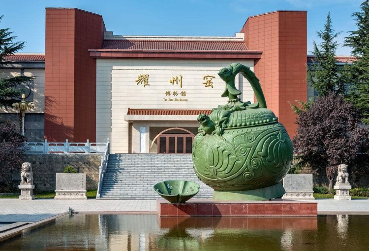

耀州，地处陕西中部渭北高原南缘，是关中通向陕北的天然门户，素有“北山锁钥”、“关辅襟喉”之美誉。耀州历史悠久，文化底蕴深厚，至今已有2160多年的历史，是隋唐医药学家孙思邈、西晋哲学家傅玄、唐代书法家柳公权、史学家令狐德棻和北宋山水画家范宽等“一圣四杰”的故里。
加大历史文化保护与传承力度，挖掘耀州文化符号，打造文化品牌，提升耀州文化品位和影响力，全面推进文化体制改革，切实让文化发展成果普惠于民，是耀州加强文化建设的落脚点。众多文化古迹得到精心保护和修缮，药王山、神德寺塔、祋祤宫遗址愈久弥新。陕甘边照金革命纪念馆被确定为全国爱国主义教育基地和国防教育基地、省级党史教育基地，是全国100个红色旅游经典景区之一。
两千多年的历史，孕育了耀州深厚的文化底蕴和内涵。耀州区深入实施“文化兴耀”发展战略，重点打造“红色文化、历史文化、佛教文化、养生文化和生态文化”五大文旅精品，强力推进“文旅产”互动、“旅文城”一体的城市建设，构建全域旅游大格局。
第五届中国（北京）国际服务贸易交易会非遗专题，耀州展区商品四大类共展出500余件，以“药王养生”、“耀瓷”、“非遗民俗”、“红色文化” 四大主题，全面展示耀州深厚的文化底蕴和非遗技艺。
• 红色基因薪火相传
1933年，刘志丹、谢子长、习仲勋等老一辈无产阶级革命家，在耀州区创建了西北第一个山区革命根据地—照金革命根据地，点燃了大西北民主革命的火焰。陕甘边照金革命根据地旧址是国家重点文物保护单位，是全国100个红色旅游经典景区之一，每年吸引着数以百万计的游客来此旅游观光。
• 药王文化深化品牌产业链
被后人尊称为“药王”的的孙思邈，给人们留下了十分珍贵的中医学养生文化。结合孙思邈中医药文化节、药王山古庙会等传统节庆活动，着力打造“药王”品牌。并不断深挖药王山景区资源，创建药王山养生文化体验中心、药王城、中医药文化商业街区等重点项目，培育延伸文化品牌产业链。
• 千年耀瓷流光溢彩
耀州瓷是耀州窑产品的统称，唐代创烧，连续烧造陶瓷的历史长达1300余年，在中国陶瓷史上占有极为重要的地位，为宋代中国六大窑系之一，被誉为“中国古代北方青瓷的代表”，享有“宋代刻花青瓷之冠”的美誉。现代生活中，耀州瓷已成为收藏鉴赏、礼品馈赠、家居装饰等佳品，在国内外享有盛誉，深受各界人士的青睐。
• 非遗技艺独树一帜
耀州非物质文化遗产丰富多彩。区政府公布非遗保护项目36项，其中省级7项，市级10项 。区内有国家级非遗保护项目 2项，尤以耀州瓷制作技艺、药王山庙会、香山庙会，柳公权范宽书画艺术等享誉国内外。
在非物质文化遗产的传承保护工作中，耀州区始终坚持“保护为主，抢救第一，合理利用，传承发展”的工作方针，全面普查，加大投入，加强保护，先后建立区级非遗数据库，完善档案管理，编制保护名录，储备线索245条，搜集整理实物12000多个，照片1500多张。耀州区非物质文化遗产线索多，数量大，种类全，为民间民俗文化的传承发展奠定了坚实基础。
耀州特色非遗作品已登录非遗国际营销平台